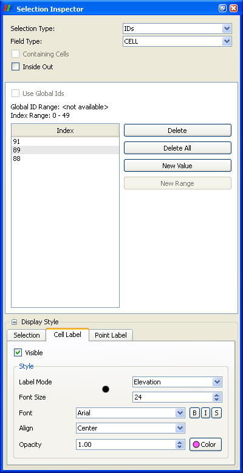
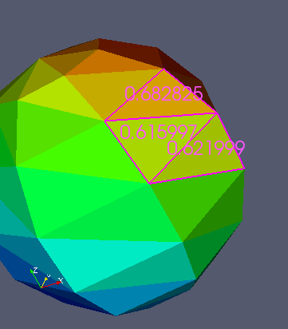

The selection inspector panel displays the current selection and allows the user to manually make changes to it. The top portion of the panel shows general information and controls for the active selection. The middle section of the panel shows controls that are specific to the particular type of selection that is active. The bottom section of the panel controls how the selection and selection labels are shown.

The Selection Type widget specifies what type of selection is active. For surface selections made in a 3D View, or row selections made in a Spreadsheet View, this will be "IDs", meaning that particular cells or points are selected. When cells or points are selected through a dataset in the 3D view, the type will be "Frustum" meaning that the selection refers to a region of space instead of a set of IDs. The Field Type widget specifies whether cells or points are being selected. The Containing Cells checkbox is a control for Point Selections. When disabled individual points are obtained with each selection. When enabled the cells that contain each selected point are also obtained. Inside out is a parameter of all selection types which means everything other than the selection is desired.
For ID selections, the middle portion of the panel will show the list of cells or points that are selected. The list may be either a set of GLOBAL_IDS, or processor/index pairs. In either case the list is a set of identifiers that uniquely address particular points and cells in the data. GLOBAL_IDS are only available on datasets for which specifically designated cell and point data arrays have been created for that purpose. One can manually add or remove ids to and from this list and sees the results in other views, and vice versa.
For frustum selections the middle portion of the panel shows a control that makes the boundaries of the frustum visible.
The bottom portion of the panel has three tabs. The first controls the color and line style by which the active selection is emphasized in the 3D View. The next two tabs control cell and point labeling respectively. With these tabs one can show text in the 3D view for every selected cell and point. The tabs have controls to change the label font properties, and to choose between labeling the cell and point IDs, or the scalar data values of the selected cells and points. This is demonstrated in the figure below.
